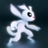

 Ori and the Will of the Wisps
Detalles
 |
|
| Tiempo de juego | No Jugado |
| Última actividad | Nunca |
| Añadido | 11/6/2024 15:27:56 |
| Modificado | 11/17/2024 14:35:04 |
| Estado de finalización | No Jugado |
| Librería | Playnite |
| Fuente | 1 TB 1 |
| Plataforma | PC (Windows) |
| Fecha de lanzamiento | 3/10/2020 |
| Puntuación de la Comunidad | 95 |
| Puntuación de la Crítica | 88 |
| Puntuación de usuario | |
| Género | Acción |
| Desarrollador | Moon Studios GmbH |
| Editor | Xbox Game Studios |
| Característica | Cloud Saves Compat. Total Con Mando HDR Disponible Logros De Préstamo Familiar Remote Play En Móvil Remote Play En Tableta Remote Play En TV Un Jugador |
| Enlaces | Punto de encuentro Discusiones Guías Noticias Página de la tienda PCGamingWiki Logros |
| Tag | 2D Acción Acción y aventura Adorables Ambientales Aventura Buena trama Difíciles Emocionales Exploración Fantasía Gran banda sonora Indie Metroidvania Mundo abierto Plataformas Preciosos Puzles Tipo «Dark Souls» Un jugador |
Descripción
ORI AND THE WILL OF THE WISPS ES UN JUEGO IMPRESCINDIBLE*:
• 98/100 GAMESBEAT “… una obra de arte trepidante y emotiva”
• 9.5/10 GAMEINFORMER “La historia es fantástica y el mundo es impresionante”
• 9/10 IGN “… esta secuela solo se merece elogios”
• 9.5/10 DESTRUCTOID “Marca un antes y un después al principio de una década que está por llegar”
• 4.5/5 WINDOWS CENTRAL “Sensacional y extraordinario…”
• 90/100 GAMERS HEROES “Ori and the Will of the Wisps es un juego apasionante hecho con mucho amor”
• 9/10 PRESS START AUS “… el acto final te llegará al corazón y te hará sentir mucha alegría de vivir”
• 9/10 AUS GAMERS
• 9/10 EUROGAMER ITALY
• 91/100 GAMESTAR.DE
• 90/100 ATOMIX
• 5/5 HARDCORE GAMER
• 9.4/10 VANDAL
• 9/10 VIDEOGAMER
• 5/5 DAILY STAR: “… una obra maestra elaborada de manera exquisita que eleva el género Metroidvania”
• 9.2/10 MERISTATION
• 9/10 GAMESPEW “Ori and the Will of the Wisps es quizás el juego más bonito al que he jugado en toda mi vida”
• 9.8/10 THE GAMES MACHINE
• 4.5/5 SCREEN RANT “Una secuela espectacular”
• 9.5/10 EASYALLIES “Es un juego excepcional que no te puedes perder”
• 9.2/10 GAMERSKY
• 4.5/5 TWINFINITE “Una aventura Metroidvania mágica”
• 94/100 COGconnected
*Las puntuaciones y las citas son de las versiones del juego para Windows PC o consola. Fuente: 03/17/2020
No es la primera vez que el pequeño Ori se enfrenta al peligro, pero cuando un vuelo desafortunado ponga en riesgo a la buhita Ku, va a hacer falta algo más que valor para volver a reunir a una familia, sanar una tierra asolada y descubrir el verdadero destino de Ori. Llega la esperada secuela de los creadores del aclamado juego de acción y plataformas Ori and the Blind Forest. Embárcate en una aventura totalmente nueva dentro de un inmenso mundo repleto de nuevos amigos y enemigos que cobran vida gracias a un impecable trabajo de diseño artesanal. Con una banda sonora original totalmente orquestada, Ori and the Will of the Wisps es fiel a la tradición de Moon Studios de crear acción de plataformas al detalle con una historia que profundiza en las emociones.
• 98/100 GAMESBEAT “… una obra de arte trepidante y emotiva”
• 9.5/10 GAMEINFORMER “La historia es fantástica y el mundo es impresionante”
• 9/10 IGN “… esta secuela solo se merece elogios”
• 9.5/10 DESTRUCTOID “Marca un antes y un después al principio de una década que está por llegar”
• 4.5/5 WINDOWS CENTRAL “Sensacional y extraordinario…”
• 90/100 GAMERS HEROES “Ori and the Will of the Wisps es un juego apasionante hecho con mucho amor”
• 9/10 PRESS START AUS “… el acto final te llegará al corazón y te hará sentir mucha alegría de vivir”
• 9/10 AUS GAMERS
• 9/10 EUROGAMER ITALY
• 91/100 GAMESTAR.DE
• 90/100 ATOMIX
• 5/5 HARDCORE GAMER
• 9.4/10 VANDAL
• 9/10 VIDEOGAMER
• 5/5 DAILY STAR: “… una obra maestra elaborada de manera exquisita que eleva el género Metroidvania”
• 9.2/10 MERISTATION
• 9/10 GAMESPEW “Ori and the Will of the Wisps es quizás el juego más bonito al que he jugado en toda mi vida”
• 9.8/10 THE GAMES MACHINE
• 4.5/5 SCREEN RANT “Una secuela espectacular”
• 9.5/10 EASYALLIES “Es un juego excepcional que no te puedes perder”
• 9.2/10 GAMERSKY
• 4.5/5 TWINFINITE “Una aventura Metroidvania mágica”
• 94/100 COGconnected
*Las puntuaciones y las citas son de las versiones del juego para Windows PC o consola. Fuente: 03/17/2020
No es la primera vez que el pequeño Ori se enfrenta al peligro, pero cuando un vuelo desafortunado ponga en riesgo a la buhita Ku, va a hacer falta algo más que valor para volver a reunir a una familia, sanar una tierra asolada y descubrir el verdadero destino de Ori. Llega la esperada secuela de los creadores del aclamado juego de acción y plataformas Ori and the Blind Forest. Embárcate en una aventura totalmente nueva dentro de un inmenso mundo repleto de nuevos amigos y enemigos que cobran vida gracias a un impecable trabajo de diseño artesanal. Con una banda sonora original totalmente orquestada, Ori and the Will of the Wisps es fiel a la tradición de Moon Studios de crear acción de plataformas al detalle con una historia que profundiza en las emociones.